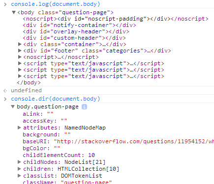

{{APIRef("Console API")}}
The {{domxref("Console")}} method
log() outputs a message to the web console. The
message may be a single string (with optional substitution values), or it may be any one
or more JavaScript objects.
{{AvailableInWorkers}}
console.log(obj1 [, obj2, ..., objN]); console.log(msg [, subst1, ..., substN]);
obj1 ... objNconsole.log(), but
it is the value of the object at the moment you open the console.msgsubst1 ... substNmsg. This gives you additional control over the format of the output.
See Outputting text to the console in the documentation of {{domxref("console")}} for details.
You might ask yourself what's the difference between {{domxref("console.dir()")}} and
console.log().
Another useful difference in Chrome exists when sending DOM elements to the console.

Notice:
console.log prints the element in an HTML-like treeconsole.dir prints the element in a JSON-like treeSpecifically, console.log gives special treatment to DOM elements, whereas
console.dir does not. This is often useful when trying to see the full
representation of the DOM JS object.
There's more information in the Chrome Console API reference about this and other functions.
Don't use console.log(obj), use
console.log(JSON.parse(JSON.stringify(obj))).
This way you are sure you are seeing the value of obj at the moment you
log it. Otherwise, many browsers provide a live view that constantly updates as values
change. This may not be what you want.
{{Compat}}